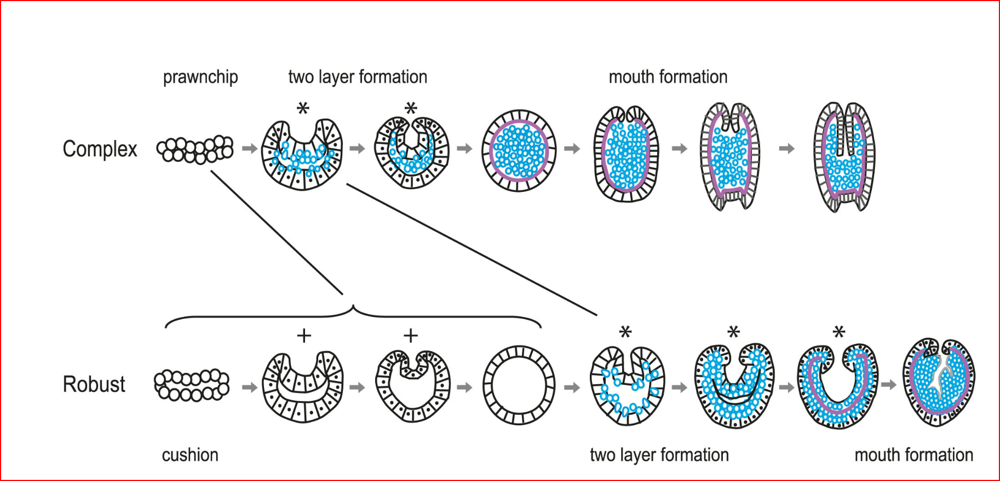

Montipora capitata corals are taxonomically classified in the Domain Eukaryota, Kingdom Animalia, Phylum Cnidaria, Class Hexacorallia, Order Scleractinia, Family Acroporidea, Genus Montipora, Species M. capitata.
Corals of the World species factsheet
Dana, J.D. (1846a). Zoophytes, in United States Exploring Expedition. During the years 1838, 1839, 1840, 1841, 1842. Under the command of Charles Wilkes, U.S.N. (Philadelphia: Lea and Blanchard), 7:1-740. (For species details see pp. 504-505 and Plate 47, Fig. 4)
Described also in 1989 in Veron and Hodgson (1989) from type specimens collected on reefs in the Philippines.
Their life history is described as a ‘complex coral’ which forms two germ layers from a ‘prawn chip’ and becomes a spherical ‘gastrula’ with a visible ‘blastopore’(okub02013?).
(Okubo et al. 2013)